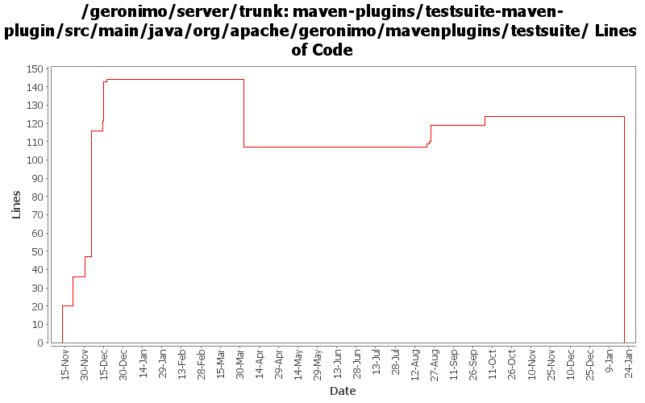

[root]/maven-plugins/testsuite-maven-plugin/src/main/java/org/apache/geronimo/mavenplugins/testsuite
 report
(0 files, 0 lines)
report
(0 files, 0 lines)

| Author | Changes | Lines of Code | Lines per Change |
|---|---|---|---|
| Totals | 24 (100.0%) | 316 (100.0%) | 13.1 |
| prasad | 15 (62.5%) | 251 (79.4%) | 16.7 |
| jdillon | 7 (29.2%) | 44 (13.9%) | 6.2 |
| kevan | 1 (4.2%) | 15 (4.7%) | 15.0 |
| gawor | 1 (4.2%) | 6 (1.9%) | 6.0 |
(GERONIMO-3771) Moved maven-plugins/* to buildsupport/*, updated groupId to org.apache.geronimo.buildsupport
0 lines of code changed in 3 files:
remove commas before converting to float
6 lines of code changed in 1 file:
* insert empty cells to account for failed testsuites.
11 lines of code changed in 1 file:
* remove % statistic from results display
2 lines of code changed in 1 file:
* removed extraneous %
1 lines of code changed in 1 file:
* set perms on uploaded file
51 lines of code changed in 1 file:
* show tests/failures/errors (%) in results
2 lines of code changed in 1 file:
Replace genesis plugin-support with mojo plugin-support
*FIX SOME EVIL INDENT TOO*
42 lines of code changed in 2 files:
Std props
2 lines of code changed in 2 files:
* use getBasedir()/target instead of getBuild().getDirectory()
2 lines of code changed in 1 file:
* handle the case of writing to a grandparent surefire-reports dir
23 lines of code changed in 1 file:
* if no build number specified, skip this goal.
6 lines of code changed in 1 file:
* changing default showOnly to 8
1 lines of code changed in 1 file:
* check if server is null
5 lines of code changed in 1 file:
* get authentication info from settings.xml file also.
80 lines of code changed in 1 file:
* introduced a 'summarize' goal that will be executed in the post-site phase.
* goal will create/update a table in a html file with the summary of results.
* table will maintain the results of 'n' most recent tests.
* test results will be deployed to a numbered directory at the site location.
* this will help in maintaining results from previous test runs.
11 lines of code changed in 1 file:
* check for existence of surefire-reports dir before proceeding
36 lines of code changed in 1 file:
* introducing testsuite-maven-plugin:fix-menu goal.
* goal is a hack for now to create a full menu in the surefire-report.html file generated by the 'generate-surefire-report' goal.
* maven does not include full menu for reports run outside <reporting>
* have been unsuccessful getting maven to include custom reports with it's core reporting.
0 lines of code changed in 1 file:
GERONIMO-2537 Update the src headers in the non-module files. They need to be compliant with the new ASF src header and copyright policy (http://www.apache.org/legal/src-headers.html). I also did some cleanup of the src headers and tried to get them in a consistent format
15 lines of code changed in 1 file:
* Plugin to help Geronimo testsuite
* surefire xml and reports are not generated for 'pom' packagings.
* 'generate-surefire-xml' goal generates a surefire xml for suite poms that invoke test poms.
* 'generate-surefire-report' goal generates surefire-report.html from the above xml
20 lines of code changed in 1 file: